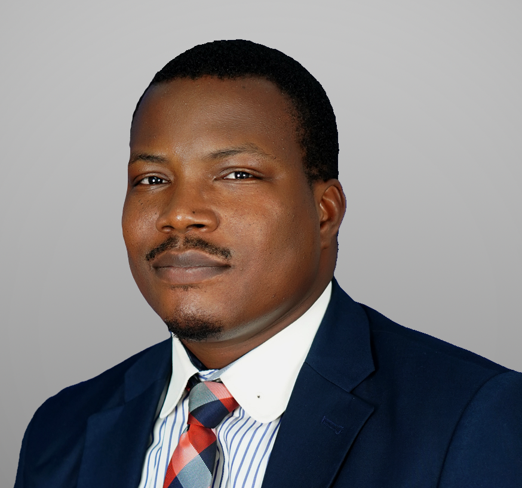

Olajide "Nekan" Oluwaseun Samuel ACA, MBA
Lagos, Nigeria | +2348100014759, +2348039754293 | seunolajyde@gmail.com
Linkedin Link

Professional Profile
A commercially minded, results-driven and digital-savvy finance business leader with over thirteen (13) years of experience in financial planning and analysis (annual budgets, forecasting, reforecast and budget control), financial management, management account and IFRS financial reporting, controllership, internal control, team leadership and business management, financial and operational strategy, tax planning, management and compliance. I am also skilled in collaborating with all stakeholders (including tax authorities, financial institutions, Board members and Shareholders). I am looking to build a strong career with your company.
Education and Professional Qualification
- Strategic Professionals Level (3 papers), ACCA Qualification, UK (In View)
- Master of Business Administration (MBA), Nexford University, USA (2024)
- BSc (Hon), Applied Accounting, Oxford Brookes University, UK (2018)
- Associate Chartered Accountant (Qualified Accountant), ACA, ICAN, Lagos (2015)
Professional Experience
MVXChange Limited/Fleetplus Inc. (Head, Finance and Business Performance) (Jan 2024 - Date)
Key Responsibilites:
- Responsible for business performance and financial management
- Responsible for financial planning and analysis (annual budgets, quarterly reforecast and budget control)
- Oversee strategic planning, growth, and expansion initiativesDevelop team members and ensure a high-performance team
Key Acheivement
- Implemented a company-wide performance measurement system that measures performance at the companyand business unit (BU) level.
Nigerdock FZE, Snake Island, Lagos (Finance Business Partner) (Feb 2023 - Dec 2023)
Key Responsibilites:
- Responsibleforfinancialplanningandanalysis(annualbudgetsandquarterlyreforecast(RFs))offour(4)related companies including Business Units/Cost Centre reports ensuring effective budget monitoring and controls
- Prepared monthly management report and analysis for Nigerdock FZE Shipyard Operations
- Prepared weekly rolling cash flow forecast for 4 related companies to ensure proper cash flow management
- Prepared monthly management accounts and annual IFRS financial statements for eight (8) related companies
Inland Containers Nigeria Limited (ICNL), Apapa, Lagos. (Head, Finance and Accounts) (June 2012 - June 2021)
Key Responsibilites:
- Coordinated the group finance function with eight (8) staff in three (3) different locations
- Oversight of monthly management accounts and prepared the group IFRS annual financial statements
- OResponsible for financial planning and analysis and performance management
- Oversaw the preparation of budget performance reports with analysis showing variances and action points
Key Acheivements
- Project Manager for the implementation and deployment of Microsoft Dynamix Navision ERP by ensuring the timely delivery of the project in line with the scope.
Technical Skills
- IFRS Financial Reporting
- Data Analysis (SQL/Python)
- Business Process Optimization
- Budgeting/Forecasting
- Cashflow Management
Other